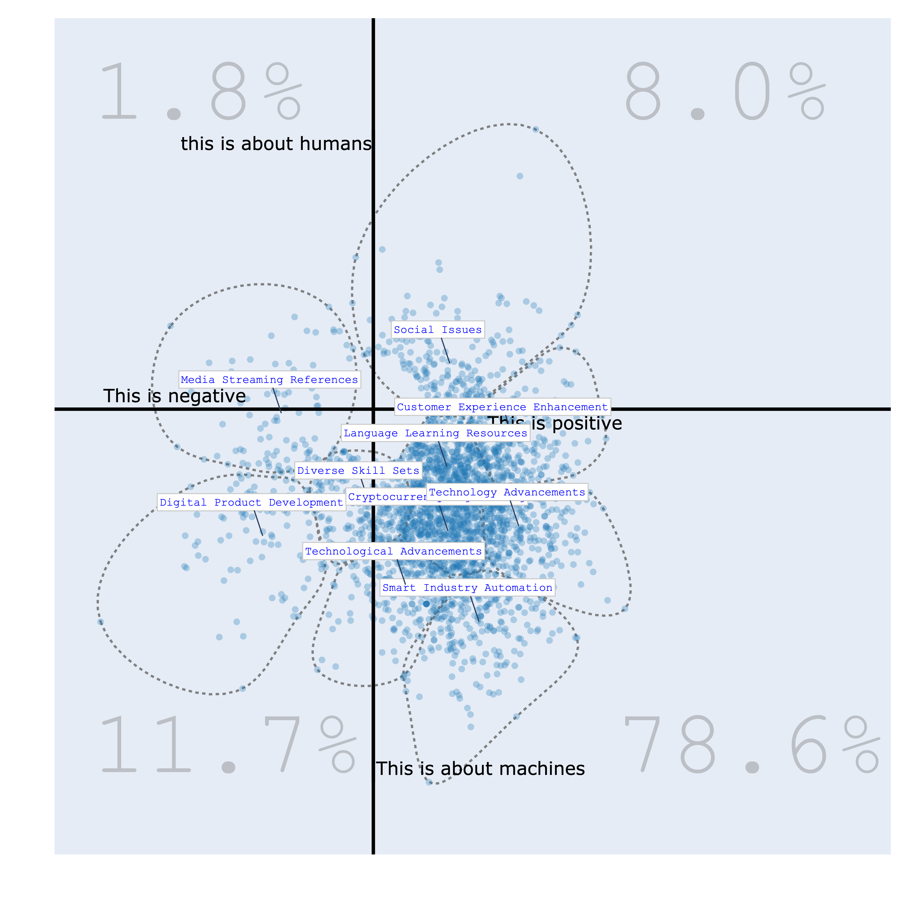

Welcome to Bunka Documentation¶
Welcome to the documentation for Bunka, an advanced library for natural language processing and data visualization.


Bunkatopics is a package designed for Topic Modeling Visualization, Frame Analysis, and Retrieval Augmented Generation (RAG) tasks, harnessing the power of Large Language Models (LLMs). Its primary goal is to assist developers in gaining insights from unstructured data, potentially facilitating data cleansing and optimizing LLMs through fine-tuning processes. Bunkatopics is constructed using well-known libraries like langchain, chroma, and transformers, enabling seamless integration into various environments.
Discover the different Use Case:
-
Content Overview: The Medium website offers a wealth of content across various categories such as Data Science, Technology, Programming, Poetry, Cryptocurrency, Machine Learning, Life, and more. While these categories facilitate data searching, they may not provide a granular overview. For instance, within the Technology category, what specific topics does Medium cover?
-
Fine-Tuning: To achieve precise fine-tuning, it's crucial to exercise control over the data, filtering what is relevant and discarding what isn't. Bunka is a valuable tool for accomplishing this task.
-
Framing Analysis: Data can be analyzed in countless ways, contingent on your objectives and interests. We've developed a tool that enables you to visualize data by semantically customizing your own axes.
Discover different examples using our Google Colab Notebooks¶
| Theme | Google Colab Link |
|---|---|
| Visual Topic Modeling with Bunka | |
| Cleaning dataset for fine-tuning LLM using Bunka | |
| Understanding a dataset using Frame Analysis with Bunka | |
| Full Introduction to Topic Modeling, Data Cleaning and Frame Analysis with Bunka. |
Installation via Pip¶
pip install bunkatopics
Installation via Git Clone¶
git clone https://github.com/charlesdedampierre/BunkaTopics.git
cd BunkaTopics
pip install -e .
Quick Start¶
Uploading Sample Data¶
To get started, let's upload a sample of Medium Articles into Bunkatopics:
from datasets import load_dataset
docs = load_dataset("bunkalab/medium")["train"]["title"]
Choose Your Embedding Model¶
Bunkatopics offers seamless integration with Huggingface's extensive collection of embedding models. You can select from a wide range of models, but be mindful of their size. Please refer to the langchain documentation for details on available models.
from bunkatopics import Bunka
from langchain_community.embeddings import HuggingFaceEmbeddings
# Choose your embedding model
embedding_model = HuggingFaceEmbeddings(model_name="all-MiniLM-L6-v2") # We recommend starting with a small model
# Initialize Bunka with your chosen model and language preference
bunka = Bunka(embedding_model=embedding_model, language='english') # You can choose any language you prefer
# Fit Bunka to your text data
bunka.fit(full_docs)
# Get a list of topics
print(df_topics)
>>> bunka.get_topics(n_clusters=15, name_length=3)# Specify the number of terms to describe each topic
topic_id topic_name size percent
bt-12 technology | Tech | Children | student | days 322 10.73
bt-11 blockchain | Cryptocurrency | sense | Cryptocurrencies | Impact 283 9.43
bt-7 gadgets | phone | Device | specifications | screen 258 8.6
bt-8 software | Kubernetes | ETL | REST | Salesforce 258 8.6
bt-1 hackathon | review | Recap | Predictions | Lessons 257 8.57
bt-4 Reality | world | cities | future | Lot 246 8.2
bt-14 Product | Sales | day | dream | routine 241 8.03
bt-0 Words | Robots | discount | NordVPN | humans 208 6.93
bt-2 Internet | Overview | security | Work | Development 202 6.73
bt-13 Course | Difference | Step | science | Point 192 6.4
bt-6 quantum | Cars | Way | Game | quest 162 5.4
bt-3 Objects | Strings | app | Programming | Functions 119 3.97
bt-5 supply | chain | revolution | Risk | community 119 3.97
bt-9 COVID | printing | Car | work | app 89 2.97
bt-10 Episode | HD | Secrets | TV 44 1.47
Visualize Your Topics¶
Finally, let's visualize the topics that Bunka has computed for your text data:
bunka.visualize_topics(width=800, height=800, colorscale='YIGnBu')

Topic Modeling with GenAI Summarization of Topics¶
Explore the power of Generative AI for summarizing topics! We use the 7B-instruct model of Mistral AI from the huggingface hub using the langchain framework.
from langchain.llms import HuggingFaceHub
# Define the repository ID for Mistral-7B-v0.1
repo_id = 'mistralai/Mistral-7B-v0.1'
# Using Mistral AI to Summarize the Topics
llm = HuggingFaceHub(repo_id='mistralai/Mistral-7B-v0.1', huggingfacehub_api_token="HF_TOKEN")
# Obtain clean topic names using Generative Model
bunka.get_clean_topic_name(generative_model=llm)
bunka.visualize_topics( width=800, height=800, colorscale = 'Portland')
Finally, let's visualize again the topics. We can chose from different colorscale.
bunka.visualize_topics(width=800, height=800)
| YlGnBu | Portland |
|---|---|
 |
 |
| delta | Blues |
|---|---|
 |
 |
We can now access the newly made topics
>>> bunka.df_topics_
topic_id topic_name size percent
bt-1 Cryptocurrency Impact 345 12.32
bt-3 Data Management Technologies 243 8.68
bt-14 Everyday Life 230 8.21
bt-0 Digital Learning Campaign 225 8.04
bt-12 Business Development 223 7.96
bt-2 Technology Devices 212 7.57
bt-10 Market Predictions Recap 201 7.18
bt-4 Comprehensive Learning Journey 187 6.68
bt-6 Future of Work 185 6.61
bt-11 Internet Discounts 175 6.25
bt-5 Technological Urban Water Management 172 6.14
bt-9 Electric Vehicle Technology 145 5.18
bt-8 Programming Concepts 116 4.14
bt-13 Quantum Technology Industries 105 3.75
bt-7 High Definition Television (HDTV) 36 1.29
Manually Cleaning the topics¶
Are you happy with the topics yes ? Let's change them manually. Click on Apply changes when you are done. In the example, we changed the topic Cryptocurrency Impact to Cryptocurrency and Internet Discounts to Advertising.
The new topics will also appear on the Map.
bunka.manually_clean_topics()

Removing Data based on topics for fine-tuning purposes¶
You have the flexibility to construct a customized dataset by excluding topics that do not align with your interests. For instance, in the provided example, we omitted topics associated with Advertising and High-Definition television, as these clusters primarily contain promotional content that we prefer not to include in our model's training data.
>>> bunka.clean_data_by_topics()

>>> bunka.df_cleaned_
doc_id content topic_id topic_name
873ba315 Invisibilize Data With JavaScript bt-8 Programming Concepts
1243d58f Why End-to-End Testing is Important for Your Team bt-3 Data Management Technologies
45fb8166 This Tiny Wearable Device Uses Your Body Heat to Chrage Electronic Devices bt-2 Technology Devices
a122d1d2 Digital Policy Salon: The Next Frontier bt-0 Digital Learning Campaign
1bbcfc1c Preparing Hardware for Outdoor Creative Technology Installations bt-5 Technological Urban Water Management
79580c34 Angular Or React ? bt-8 Programming Concepts
af0b08a2 Ed-Tech Startups Are Cashing in on Parents’ Insecurities bt-0 Digital Learning Campaign
2255c350 Former Google CEO Wants to Create a Government-Funded University to Train A.I. Coders bt-6 Future of Work
d2bc4b33 Applying Action & The Importance of Ideas bt-12 Business Development
5219675e Why You Should (not?) Use Signal bt-2 Technology Devices
Bourdieu Map¶
The Bourdieu map provides a 2-Dimensional unsupervised scale to visualize various texts. Each region on the map represents a distinct topic, characterized by its most specific terms. Clusters are formed, and their names are succinctly summarized using Generative AI.
The significance of this visualization lies in its ability to define axes, thereby creating continuums that reveal data distribution patterns. This concept draws inspiration from the work of the renowned French sociologist Bourdieu, who employed 2-Dimensional maps to project items and gain insights.
from langchain.llms import HuggingFaceHub
# Define the HuggingFaceHub instance with the repository ID and API token
llm = HuggingFaceHub(
repo_id='mistralai/Mistral-7B-v0.1',
huggingfacehub_api_token="HF_TOKEN"
)
## Bourdieu Fig
bourdieu_fig = bunka.visualize_bourdieu(
llm=llm,
x_left_words=["This is about business"],
x_right_words=["This is about politics"],
y_top_words=["this is about startups"],
y_bottom_words=["This is about governments"],
height=800,
width=800,
clustering=True,
topic_gen_name=True,
topic_n_clusters=10,
density=False,
convex_hull=True,
radius_size=0.2,
label_size_ratio_clusters=80)
# Display the Bourdieu map
bourdieu_fig.show()
| positive/negative vs humans/machines | politics/business vs humans/machines |
|---|---|
|  |  |
| politics/business vs positive/negative | politics/business vs startups/governments |
|---|---|
 |
 |
Contribution¶
If you have any questions, feedback, or would like to contribute, please don't hesitate to reach out!
Many thanks to Maarten Grootendorst for inspiring us with his groundbreaking work on Bertopics.